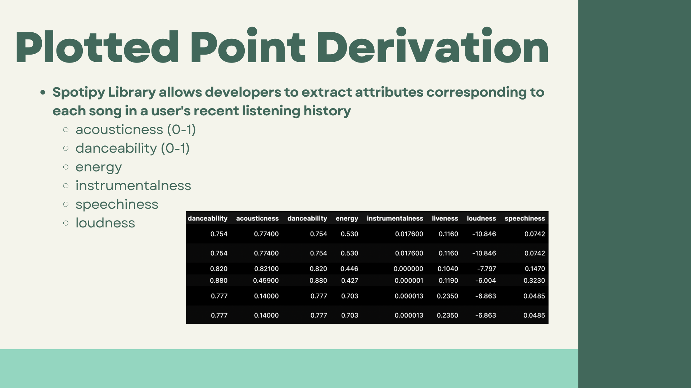
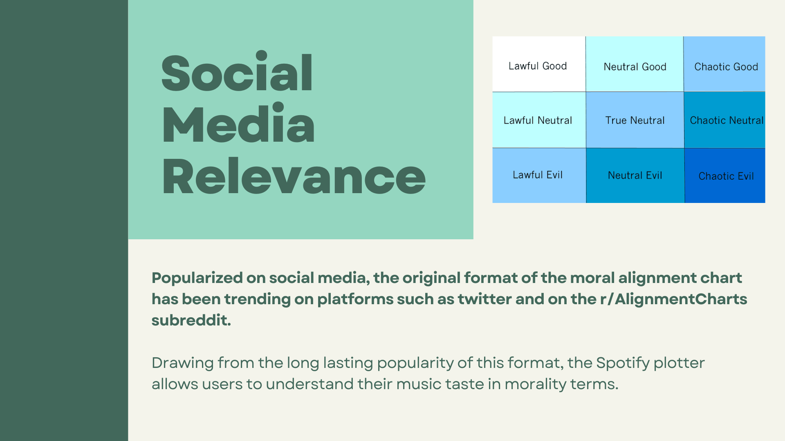

Spotify-Plotter
Objective:
Visualizing users' listening history in the moral alignment plane, popularized on social media. Plotting values based on attributes of the users' song history such as acousticness, speechiness, time signature, etc.
Tools Utilized:
Spotify API,connected using spotipy, used to extract users recent listening history, using the "user-read-recently-played" scope. Graphics created using data visulization tool matplotlib.

